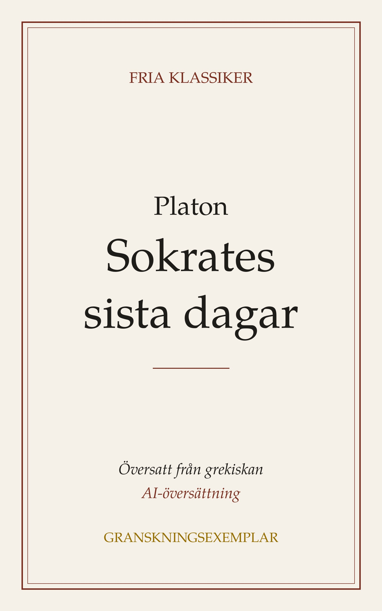

Sokrates sista dagar
Platon · Fyra dialoger i en samlingsvolym

Fyra dialoger följer Sokrates från anklagelsen till hans sista dag. Läs dem i följd på webben eller ladda ned hela samlingsvolymen.
Arbetsutgåva. Svenska AI-översättningar. Inte fackgranskade. Metod och källor finns beskrivna i respektive dialog och på om-sidan.
Dialogerna i ordning
- Euthyfron · Vad är fromhet?
- Sokrates försvarstal · Rättegången i Aten
- Kriton · Fångenskapen och lagen
- Faidon · Den sista dagen och själen